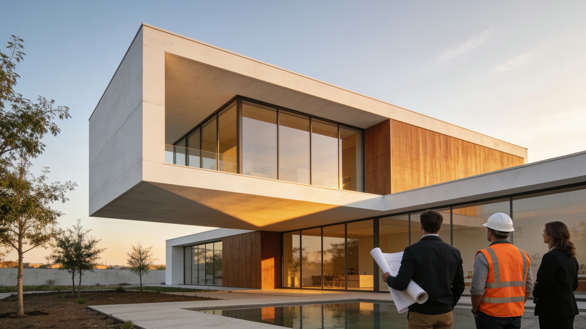

Polistibrick est un coffrage classique pour béton armé. Vous gardez vos méthodes Eurocode 2 habituelles. En plus : isolation continue moulée dans le panneau, de la RE2020 au Passif+, bibliothèque CAO/Revit centralisée, un ingénieur Polistibrick dédié à votre projet.

Nous avons conçu Polistibrick pour résoudre les 4 frictions qui empêchent les architectes et les bureaux d'études d'adopter un système ICF.
Vos calculs Eurocode 2 restent identiques. Aucune méthode spéciale à apprendre. Aucune surprise sur le chantier. Vous travaillez exactement comme sur un projet traditionnel en béton.
Portées jusqu'à 9 m sans poutres. Géométries libres (courbes, porte-à-faux, grandes ouvertures). Pas de murs porteurs intermédiaires imposés. Le béton armé Polistibrick reprend les charges.
3 niveaux de performance selon votre objectif : MBK 210 pour la RE2020, MBK 270 pour le passif, MBK 300 pour le passif premium. Vous choisissez selon le projet.
Même méthode de calcul, même mise en œuvre. Vous adaptez seulement l'épaisseur de PSE selon le niveau d'isolation visé pour votre projet.
Fiches produit, CAO, BIM, calculs, détails de construction, rapports d'essais, cahiers des charges. Centralisé. Mis à jour en permanence.
Note : les documents seront bientôt disponibles en téléchargement gratuit. En attendant, demandez-les directement. Nous vous les envoyons sous 24 heures.
Une question sur les ponts thermiques, les jonctions complexes, la descente de charges, le calcul d'une valeur U ? Notre équipe vous répond sous 24 heures, par e-mail ou par téléphone. Gratuit, sans engagement.